Apoio ao médico de família numa USF modelo B: indicadores e projeção do IDE, cuidados em falta, pré-consulta, lista e unidades ponderadas, e tarefas não presenciais.
A Bússola MGF é uma ferramenta independente de apoio. Não é um sistema oficial e não substitui o BI-CSP, o MIM@UF nem o SClínico. O IDE que calcula é uma estimativa: em caso de diferença, prevalecem sempre os valores oficiais.
A qualidade dos resultados depende de dois pontos: a matriz de indicadores configurada (capítulo 3) e a qualidade dos ficheiros importados (capítulos 4 e 5).
É uma aplicação para Windows que trabalha sem Internet e guarda os dados apenas no seu computador, cifrados com uma palavra-passe. Junta cinco ferramentas:
| Módulo | Responde à pergunta |
|---|---|
| Os meus indicadores | Onde estou, onde vou chegar em dezembro ao ritmo atual e onde cada utente recuperado vale mais IDE? |
| Cuidados em falta | Que utentes da minha lista têm registos em falta e por que ordem os devo convocar? |
| Pré-consulta | O que devo fechar em cada consulta de hoje? |
| Lista e UC ponderadas | Como é a minha lista, quantas unidades ponderadas tenho e que efeito têm novas inscrições? |
| Tarefas não presenciais | O que tenho pendente (renovações, resultados, contactos) e quanto tempo isto me ocupa? |
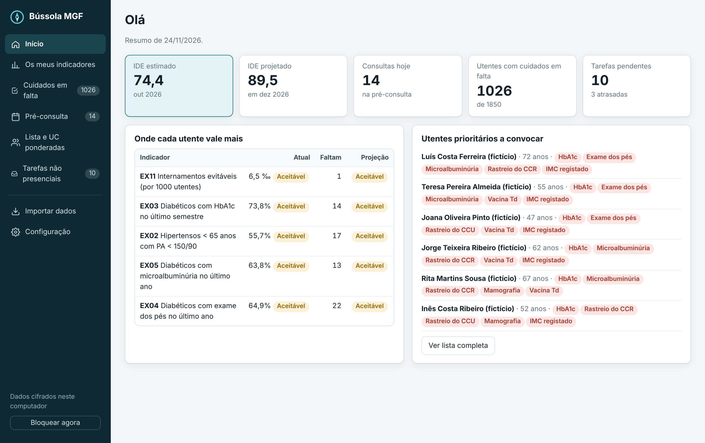
Valores mensais agregados (numerador e denominador) de cada indicador. Origem: BI-CSP ou MIM@UF. Não contêm dados de utentes.
Alimentam: Os meus indicadores.
Uma linha por utente, com a data de nascimento, o sexo, os problemas ICPC-2 e as datas dos últimos registos. São dados pessoais de saúde.
Alimenta: Cuidados em falta, Pré-consulta e Lista.
Hora e n.º de utente das consultas de hoje (opcional: também se podem adicionar à mão).
Alimenta: Pré-consulta.
São registadas diretamente na app. Não precisam de importação.
Alimentam: Tarefas não presenciais.
Os módulos são independentes: pode começar só pelos indicadores e importar a lista de utentes mais tarde.
Bussola-MGF-Setup-x.y.z.exe ou a versão portátil Bussola-MGF-Portatil-x.y.z.exe, que não precisa de instalação e pode correr de uma pasta pessoal.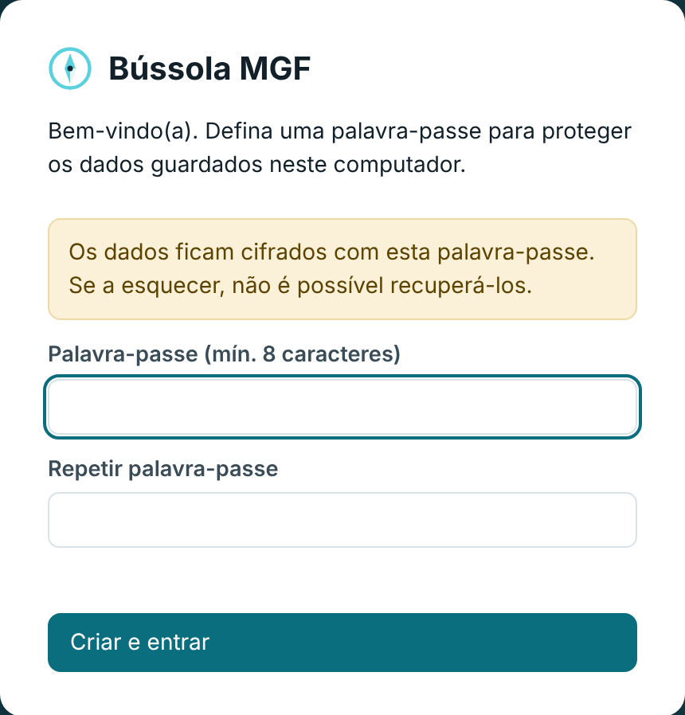
Os dados são cifrados com a palavra-passe. Se a esquecer, a única opção é apagar os dados e começar de novo. Guarde-a num local seguro e faça cópias de segurança (capítulo 12).
Em Importar dados → Carregar dados de demonstração, a app carrega 1850 utentes, resultados mensais, uma agenda e tarefas, tudo fictício. É a melhor forma de conhecer os ecrãs antes de usar dados reais. Quando importar os seus ficheiros, os dados de demonstração são substituídos.
Em Configuração há cinco blocos. Os três primeiros determinam se os números estão certos.
Os indicadores EX01 a EX11 servem só para demonstração: os pesos e limiares são inventados. Substitua-os pela matriz de contratualização da sua USF.
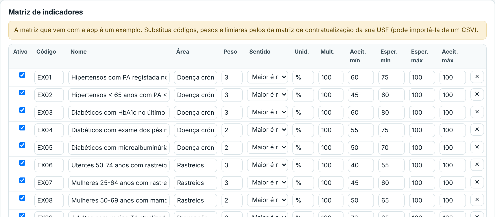
| Campo | Significado |
|---|---|
| Código | Tem de ser igual ao código que aparece no ficheiro de resultados (por exemplo, o código do indicador no BI-CSP/MIM@UF). É assim que a app liga os resultados à matriz. |
| Peso | Ponderação do indicador no IDE. Peso 0 = o indicador aparece, mas não conta para o IDE. |
| Sentido | Maior é melhor (a maioria) ou Menor é melhor (por exemplo, internamentos evitáveis). |
| Unidade / Mult. | % com multiplicador 100; ‰ com 1000. Valor = numerador ÷ denominador × multiplicador. |
| Aceit. mín / Esper. mín / Esper. máx / Aceit. máx | Limites dos intervalos. Deixe vazio o limite que não se aplica. |
Forma mais rápida: prepare a matriz numa folha Excel com estas colunas e use Importar matriz (CSV/Excel). O ficheiro exemplos/matriz-exemplo.csv mostra o formato. Se importar resultados com códigos que não estão na matriz, a app acrescenta-os com peso 0 e avisa: depois basta preencher o peso e os limites.
As regras definem o que é um «cuidado em falta». Cada regra diz:
T90 também apanha T90.1);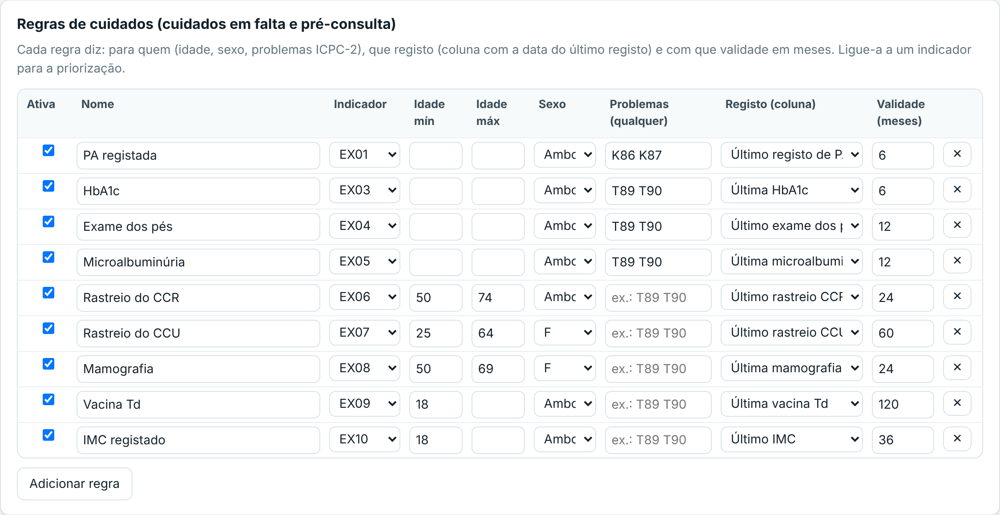
Confirme as idades, as validades e os códigos de cada regra com o «bilhete de identidade» de cada indicador contratualizado. As regras que vêm com a app são um ponto de partida.
Os fatores por grupo etário (0–6 anos: 1,5; 7–64: 1; 65–74: 2; ≥ 75: 2,5) e a UC de referência vêm com valores clássicos do modelo B. Confirme-os com o regime em vigor e ajuste-os se for preciso. Os grupos de risco (diabetes, hipertensão, DPOC…) definem-se por códigos ICPC-2.
A app não se liga a nenhum sistema: trabalha com ficheiros que exporta e importa. Este capítulo explica que ficheiro é preciso para cada módulo e onde o procurar.
Os sistemas de informação e os relatórios disponíveis variam entre ULS e mudam com as atualizações. Os caminhos indicados abaixo são orientações. Se não encontrar um relatório, peça ajuda ao responsável pelo MIM@UF/BI da sua USF, ao secretariado clínico ou aos serviços informáticos da ULS.
O que a app precisa: uma tabela com uma linha por indicador e por mês e estas colunas:
| Código | Período | Numerador | Denominador | (opcional) Nome / Valor |
|---|---|---|---|---|
| EX03 | 10/2026 | 155 | 210 | Diabéticos com HbA1c… |
Se não houver numerador e denominador, a app aceita só a coluna Valor. Nesse caso mostra o valor e a projeção, mas não calcula quantos utentes faltam.
Se o ficheiro trouxer os resultados de todos os médicos da USF, apague no Excel as linhas dos colegas antes de importar. A app não distingue médicos: se houver várias linhas com o mesmo código e mês, fica a última.
Os relatórios exportados costumam ter títulos, células unidas e o mês escrito no cabeçalho em vez de numa coluna. No Excel:
10/2026). Exportar um mês de cada vez torna isto mais simples.Para ter projeção, importe vários meses do ano contratual (no mínimo 2; 6 é o ideal). Pode importar um ficheiro por mês: cada importação acrescenta e atualiza os meses, sem apagar os anteriores.
É o ficheiro mais importante para os módulos Cuidados em falta, Pré-consulta e Lista. É uma listagem nominal, com uma linha por utente da sua lista:
| Coluna | Obrigatória? | Para quê |
|---|---|---|
| N.º de utente / processo | Sim | Identificar o utente (e ligar à agenda) |
| Data de nascimento | Sim | Idade, regras por idade e unidades ponderadas |
| Sexo | Recomendada | Rastreios do colo do útero e da mama; pirâmide etária |
| Problemas (ICPC-2) | Recomendada | Regras de diabetes e hipertensão; grupos de risco |
| Data do último registo de cada cuidado (PA, HbA1c, pé, microalbuminúria, IMC, Td, CCR, CCU, mamografia…) | Recomendada | Saber o que está em falta. Célula vazia = sem registo = em falta. |
| Nome, telefone | Opcional | Identificar o utente e convocá-lo |
| Última consulta | Opcional | Utentes sem consulta há 36 meses ou mais |
Muitas vezes é preciso juntar várias listagens numa só folha, usando o n.º de utente como chave. No Excel, a função PROCX (ou PROCV) traz para a lista de inscritos a data de cada registo vinda das outras listagens.
Uma lista com n.º, data de nascimento e sexo já permite usar o módulo Lista e UC ponderadas. Acrescente os problemas e as datas de registo aos poucos. Atenção: enquanto uma coluna de datas estiver vazia, todos os utentes elegíveis para essa regra aparecem «em falta».
Pode também desativar em Configuração → Regras as regras para as quais ainda não tem dados.
Basta uma tabela com Hora e N.º de utente (opcional: Tipo de consulta). Pode exportar ou copiar a agenda do dia do SClínico/SINUS para Excel. Também pode dispensar o ficheiro e adicionar os utentes um a um na página Pré-consulta, pelo n.º ou pelo nome.
| Elemento | Formato aceite |
|---|---|
| Tipo de ficheiro | .xlsx (só a primeira folha com dados) ou .csv (separador ; ou ,; UTF-8 ou Windows-1252). O .xls antigo não é aceite: grave como .xlsx. |
| Cabeçalho | Uma linha com os nomes das colunas. Os nomes não precisam de ser exatos: a app reconhece muitas variantes e pergunta sempre. |
| Datas | dd/mm/aaaa, aaaa-mm-dd ou datas do Excel. |
| Período (mês) | 10/2026, 2026-10, 202610, out 2026, outubro de 2026 ou uma data desse mês. |
| Números | 1234, 1.234,5, 72,3%. |
| Problemas ICPC-2 | Códigos na mesma célula, separados por espaço, vírgula ou ponto e vírgula: K86 T90 T93. |
| Sexo | F/M, Feminino/Masculino, 2/1. |
Em Importar dados, cada tipo tem um botão Modelo CSV que grava um ficheiro vazio com as colunas certas. A pasta exemplos/ do projeto tem ficheiros completos com dados fictícios.
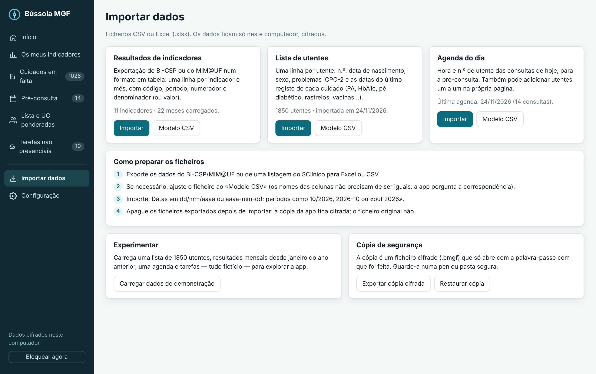
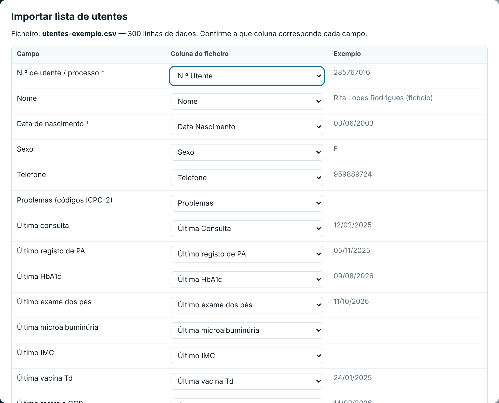
A cópia dentro da app fica cifrada, mas os ficheiros Excel/CSV exportados dos sistemas não ficam. Depois de importar, apague-os (incluindo da Reciclagem e das Transferências).
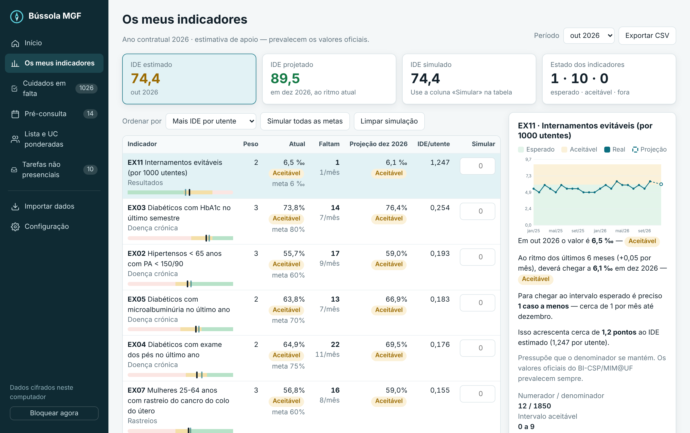
| Coluna | Significado |
|---|---|
| Barra | Verde = intervalo esperado; amarelo = aceitável; traço escuro = valor atual; traço azul = projeção. |
| Atual | Valor, estado e meta (limite do intervalo esperado). |
| Faltam | Utentes cumpridores a mais (ou casos a menos) para chegar ao esperado, com o denominador atual, e quantos por mês até dezembro. |
| Projeção | Valor previsto em dezembro e o estado correspondente. |
| IDE/utente | Pontos de IDE ganhos por cada utente recuperado. É o melhor critério para escolher onde investir. |
| Simular | Escreva quantos utentes conta recuperar e veja o IDE simulado mudar. |
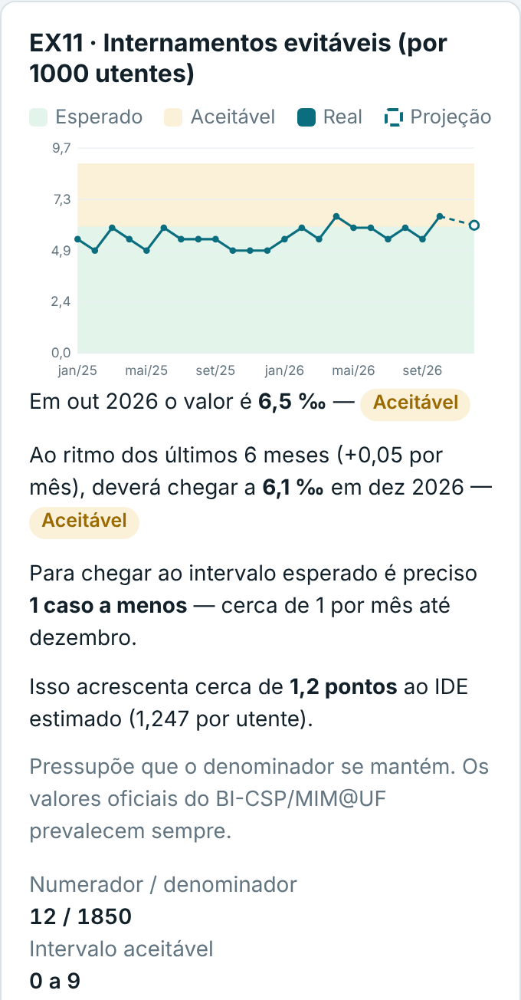
Clique num indicador para ver o gráfico mês a mês com as faixas de referência, a linha tracejada da projeção e um resumo em texto: onde está, onde vai chegar e quantos utentes faltam.
Se houver uma regra ligada ao indicador, o botão Ver utentes em falta abre a lista já filtrada.
A projeção é uma reta com base nos últimos meses: não prevê campanhas, sazonalidade nem alterações do denominador. A distância em utentes assume que o denominador se mantém.
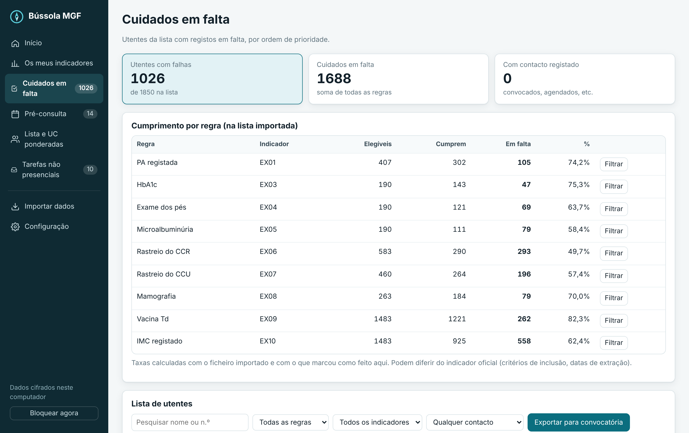
A tabela Cumprimento por regra mostra, para cada regra, quantos utentes são elegíveis, quantos cumprem e quantos estão em falta. É uma forma rápida de verificar se o ficheiro está bem: valores muito diferentes dos oficiais indicam uma coluna mal mapeada ou uma regra mal definida.
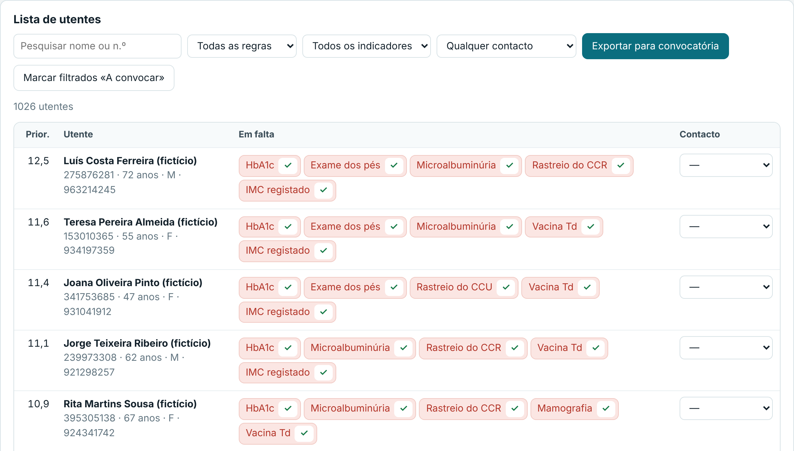
Marcar «feito» na app não regista nada no SClínico. O registo clínico tem sempre de ser feito no sistema oficial; só esse conta para os indicadores.
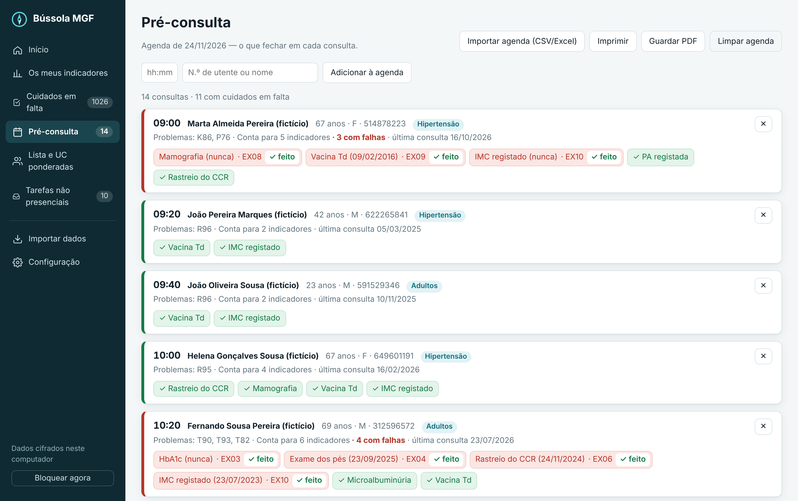
Um cartão cinzento indica um utente da agenda que não está na lista importada (por exemplo, um utente de outro médico ou uma inscrição recente).
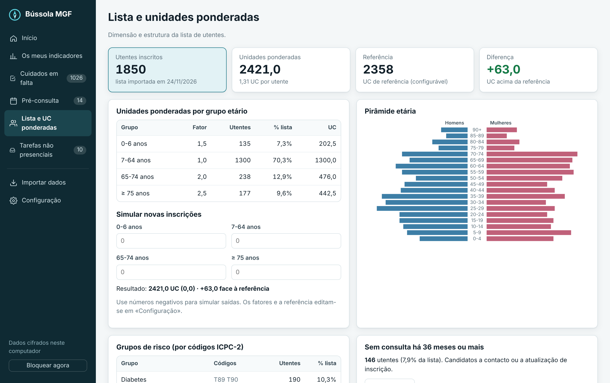
As UC são calculadas com a lista importada e com os fatores configurados. Os valores oficiais de dimensão da lista (RNU) prevalecem.
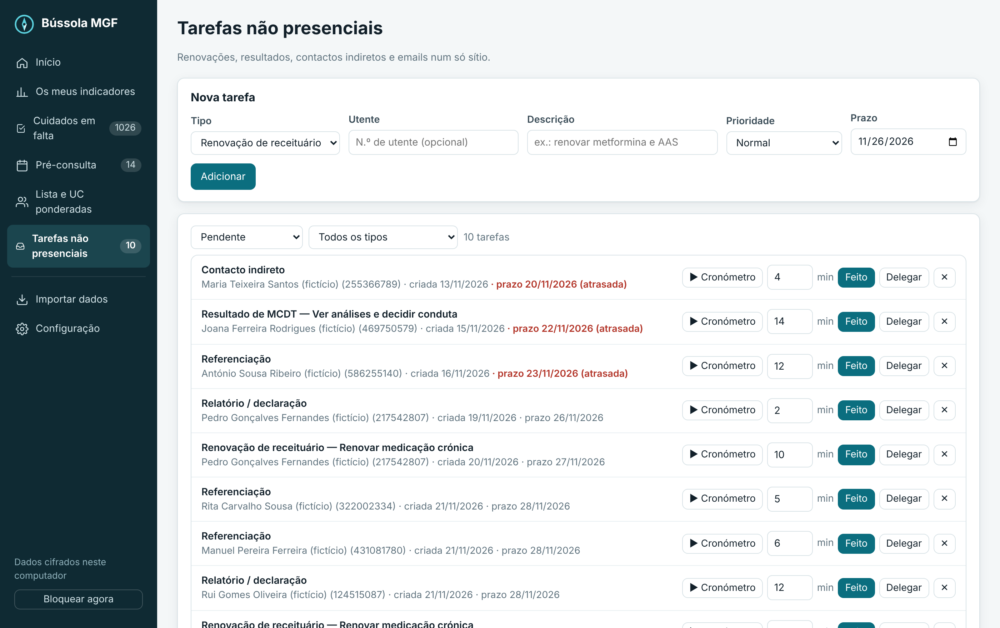
As estatísticas (7, 30 e 90 dias, ou desde sempre) mostram o número de tarefas, o tempo total e o tempo médio por tipo. São úteis para mostrar a carga não presencial na contratualização e na distribuição de trabalho da equipa. O botão Exportar CSV grava o detalhe.
| Quando | O quê | Módulo |
|---|---|---|
| Todos os dias (5 min) | Importar ou criar a agenda e rever os cartões antes da primeira consulta. Registar as tarefas não presenciais à medida que surgem e fechá-las no fim do dia. | Pré-consulta Tarefas |
| Todas as semanas (15 min) | Atualizar a lista de utentes. Filtrar os 2 ou 3 indicadores com mais IDE por utente, exportar a convocatória para o secretariado e atualizar o estado dos contactos da semana anterior. | Importar dados Cuidados em falta |
| Todos os meses (20 min) | Importar os resultados do mês (BI-CSP/MIM@UF). Ver a projeção e decidir onde concentrar o esforço com a coluna «IDE/utente». Exportar o CSV para a reunião de equipa. Fazer uma cópia de segurança. | Os meus indicadores Importar dados |
| Início do ano contratual | Atualizar o ano contratual, a matriz (pesos e limiares), as regras, os fatores de ponderação e a UC de referência. | Configuração |
Concentre-se nos indicadores com mais IDE por utente e projeção abaixo do esperado. São os que mais beneficiam de esforço adicional. Um indicador que já vai chegar ao esperado ao ritmo atual não precisa de convocatórias extra.
%APPDATA%\Bússola MGF\dados.bmgf, cifrados com AES-256-GCM. A chave é derivada da palavra-passe com scrypt, e a palavra-passe não é guardada.Em Importar dados → Exportar cópia cifrada grava um ficheiro .bmgf que só abre com a palavra-passe em vigor nesse momento. Guarde-o numa pen ou numa pasta segura. Para mudar de computador, instale a app no novo, crie uma palavra-passe e use Restaurar cópia.
Em Configuração → Segurança e dados:
| Problema | Solução |
|---|---|
| O IDE estimado é diferente do oficial. | Confirme a matriz (códigos, pesos, limiares e sentido) e o modo de pontuação. Os indicadores sem dados no mês ficam de fora do cálculo, e é usado o último mês disponível. Lembre-se de que é uma estimativa. |
| Um indicador aparece com peso 0 ou «Por configurar». | O código veio no ficheiro mas não estava na matriz. Preencha o peso e os limites em Configuração, ou corrija o código na matriz para coincidir com o do ficheiro. |
| Sem projeção («—»). | São precisos pelo menos 2 meses do ano contratual. Confirme também o Ano contratual em Configuração. |
| «Faltam» mostra «—». | O ficheiro só tem o valor, sem numerador nem denominador. |
| Quase todos os utentes aparecem em falta numa regra. | A coluna de datas dessa regra está vazia ou mal mapeada. Verifique a correspondência de colunas ao importar e o campo «Registo (coluna)» da regra. Desative a regra se não tiver dados. |
| Rastreios femininos sem elegíveis. | A coluna «Sexo» não foi mapeada ou tem valores não reconhecidos. |
| Linhas ignoradas ao importar. | A app mostra quais e porquê (sem n.º de utente, mês inválido, sem numerador). Corrija no Excel e importe de novo. |
| «O formato .xls antigo não é suportado». | No Excel, use Ficheiro → Guardar como → Livro do Excel (.xlsx). |
| Acentos estranhos (ç, ã…). | Grave o CSV como «CSV UTF-8» no Excel, ou importe o .xlsx diretamente. |
| Utente da agenda aparece «não está na lista importada». | O n.º não coincide com a lista (por exemplo, n.º de processo na agenda e n.º SNS na lista). Use o mesmo identificador nos dois ficheiros. |
| Esqueci a palavra-passe. | Não há recuperação. No ecrã de bloqueio, use «Esqueci a palavra-passe» para apagar os dados e recomeçar. Depois restaure uma cópia de segurança, se tiver uma (precisa da palavra-passe dessa cópia). |
| O Windows impede a execução. | «Mais informações → Executar mesmo assim». Em computadores geridos pela ULS, peça apoio aos serviços informáticos. |
Na importação, a app compara os cabeçalhos sem acentos, maiúsculas, espaços nem pontuação. Exemplo: «N.º Utente» é lido como nutente. Estes nomes são reconhecidos automaticamente; qualquer outro pode ser escolhido à mão.
| Campo | Cabeçalhos reconhecidos (exemplos) |
|---|---|
| N.º de utente / processo * | N.º Utente, Número Utente, NUS, SNS, Utente, Processo, ID |
| Data de nascimento * | Data Nascimento, Nascimento, Data Nasc, DN |
| Nome · Sexo · Telefone | Nome · Sexo, Género · Telefone, Telemóvel, Contacto |
| Problemas (ICPC-2) | Problemas, ICPC, ICPC2, Diagnósticos, Lista Problemas |
| Última consulta | Última Consulta, Data Última Consulta |
| Último registo de PA | PA, Tensão Arterial, Última PA |
| Última HbA1c | HbA1c, Hemoglobina Glicada |
| Último exame dos pés | Pé, Pé Diabético, Exame Pés |
| Última microalbuminúria | Microalb, Microalbuminúria, ACR |
| Último IMC | IMC, BMI |
| Última vacina Td | Td, Vacina Td, Tétano |
| Último rastreio CCR | CCR, PSOF, Colonoscopia, Rastreio CCR |
| Último rastreio CCU | CCU, Citologia, HPV, Colpocitologia |
| Última mamografia | Mamografia, Mamo, Rastreio Mama |
As colunas que não correspondem a nenhum campo são guardadas com o nome normalizado. Pode usá-las em regras próprias (Configuração → Regras → «Registo (coluna)»).
| Campo | Cabeçalhos reconhecidos (exemplos) |
|---|---|
| Código do indicador * | Código, Cod, Indicador, ID Indicador |
| Período (mês) * | Período, Mês, Data, Ano Mês, Mês Referência |
| Numerador · Denominador | Numerador, Num · Denominador, Den |
| Valor / resultado | Valor, Resultado, Taxa, Proporção |
| Nome do indicador | Nome, Designação, Descrição |
| Campo | Cabeçalhos reconhecidos (exemplos) |
|---|---|
| N.º de utente * | N.º Utente, Utente, Processo, SNS |
| Hora · Tipo | Hora, Horário · Tipo, Tipologia, Programa |
Colunas: Código, Nome, Área, Peso, Sentido (maior/menor), Unidade (% ou ‰), Multiplicador, Aceitável mín., Esperado mín., Esperado máx. e Aceitável máx.. Veja exemplos/matriz-exemplo.csv.